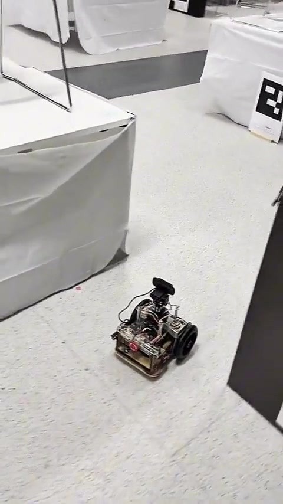

Project 01 / Autonomous systems
Autonomous Mobile Robot
Bringing perception, state estimation and control together in a robot built to inspect plants.
- My contribution
- Team lead
- Project type
- Farm-robot prototype
- Tools & focus
- ROS · NVIDIA Jetson · C++ · Python

The idea
A farm robot needs to do more than move from one point to another. It needs an estimate of where it is, a way to follow a trajectory, and a way to interpret the plants it encounters.
This project brought those functions together in an autonomous mobile-robot prototype designed to detect plants and report on their health.
My contribution
I led the team building the robot. The complete system combined wheel-encoder and computer-vision information for localisation, a time-varying LQR trajectory-tracking controller, and computer vision for plant and plant-health classification.
The implementation ran on an NVIDIA Jetson platform using ROS, with software written in C++ and Python.
Inside the system
- Sensor fusion. A Kalman filter combined wheel-encoder and computer-vision information to estimate the robot’s location.
- Trajectory tracking. A time-varying linear quadratic regulator provided the trajectory-tracking controller.
- Onboard perception. Computer vision classified plants and their health as part of the robot’s inspection task.
- System integration. ROS connected the onboard software on NVIDIA Jetson, using a mixture of C++ and Python.
Localise
Fuse wheel-encoder and vision information.
Track
Follow trajectories with time-varying LQR.
Classify
Identify plants and assess their health.
Functional overview of the project’s main elements.
See it in motion.
Project footage / silent excerpt
A short, silent excerpt from the original project demonstration. The mobile-robot prototype during an indoor navigation demonstration. Open video file ↗
Prototype outcome
An integrated farm-robot prototype connecting localisation, trajectory tracking and plant-health classification on one onboard platform.